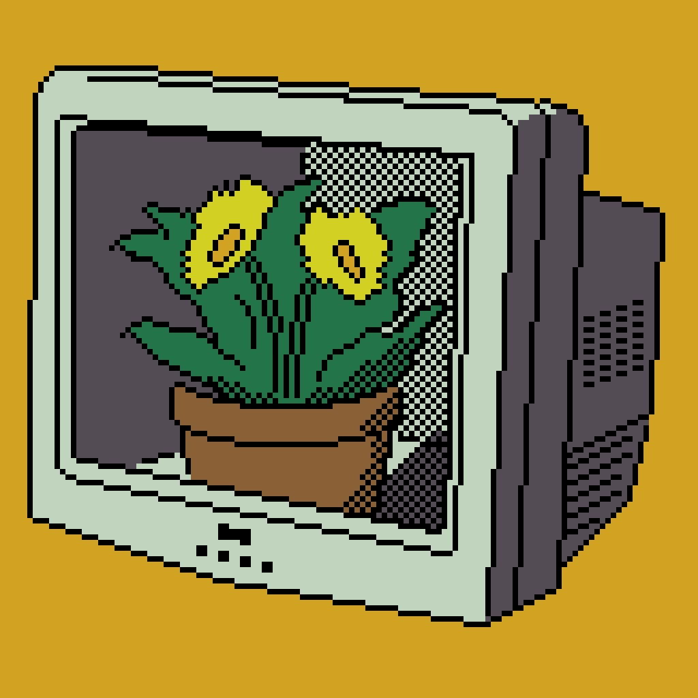

Last updated: Sun Nov 06 2022 | Permalink | RSS  A low-color pixel art image of a potted flowering plant growing inside of an empty CRT TV Thank you for reading! Please consider supporting this blog.